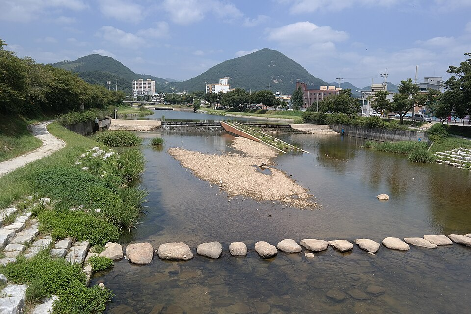

순창 검정고시 — 대학까지 갈 거면 수시·정시부터 정하세요

고졸 검정고시를 준비하는 분 중에는 합격이 끝이 아니라 대학이 목표인 분이 많습니다. 그런데 대개 "일단 붙고 나서 생각하자"로 미루십니다. 미루면 합격한 다음에 다시 처음부터 공부 방향을 잡게 되어 시간이 한 번 더 듭니다. 전북 순창 검정고시를 준비하면서 무엇을 먼저 정해 두면 되는지 정리했습니다.
합격 점수와 대입에 쓰이는 점수는 다릅니다
검정고시 합격 기준은 평균 60점입니다. 이건 학력을 인정받는 선이지 대학에 쓰이는 점수가 아닙니다. 수시에서 검정고시 성적을 보는 전형이라면 60점으로는 경쟁이 되기 어렵습니다.
그래서 목표를 정할 때 "합격만 할 것인가, 성적도 쓸 것인가"를 먼저 나눠야 합니다. 이 하나만 정해도 공부 분량과 기간이 크게 달라집니다. 합격만 목표라면 버릴 문제를 미리 정해도 되지만, 성적을 쓸 생각이라면 과목마다 끝까지 끌어올려야 합니다.
수시로 갈 때 — 검정고시 성적이 학생부 자리를 대신합니다
고등학교를 다니지 않았으니 학교생활기록부가 없습니다. 수시에서 검정고시 출신을 받는 전형은 그 자리를 검정고시 성적으로 대신 보는 방식이 일반적입니다. 즉 검정고시 점수 자체가 서류가 됩니다.
다만 전형마다 반영 방식과 반영 과목이 다릅니다. 전 과목을 보는 곳도 있고 일부만 보는 곳도 있으며, 검정고시 출신을 아예 받지 않는 전형도 있습니다. 그래서 가고 싶은 학교의 모집요강을 직접 확인하는 일이 반드시 필요합니다. 여기서 숫자를 적어 드릴 수 없는 이유도 학교마다 다르기 때문입니다.
정시로 갈 때 — 준비하는 시험이 아예 달라집니다
정시는 수능 성적으로 갑니다. 이 경우 검정고시는 수능에 응시할 자격을 얻는 단계가 되고, 실제 승부는 수능에서 납니다. 두 시험은 범위도 문제 형태도 달라서, 검정고시 공부만 계속해서는 수능 점수가 따라오지 않습니다.
그래서 정시를 생각한다면 검정고시는 빠르게 끝내고 수능 공부로 옮겨 타는 일정이 맞습니다. 반대로 수시를 생각한다면 검정고시 점수 자체를 끌어올리는 데 더 오래 투자하는 게 맞습니다. 같은 '대학 가기'인데 준비가 정반대라서, 이걸 안 정하고 시작하면 어느 쪽에도 안 맞는 공부를 하게 됩니다.
지금 정할 수 없다면, 겹치는 과목부터 하세요
아직 수시인지 정시인지 못 정하셨다면 그것도 괜찮습니다. 그럴 때는 어느 쪽으로 가도 쓰이는 과목, 즉 국어·영어·수학부터 제대로 밟아 두시면 됩니다. 이 세 과목은 검정고시에서도 비중이 크고 수능에서도 그대로 쓰입니다.
반대로 선택과목처럼 한쪽에만 쓰이는 부분은 방향이 정해진 다음에 붙이셔도 늦지 않습니다. 순서를 이렇게 잡아 두면 나중에 어느 쪽으로 정하든 지금 한 공부가 버려지지 않습니다.
순창에서 이렇게 함께합니다
저희는 1:1 맞춤 과외라 첫 상담에서 합격까지만 볼지, 대학까지 볼지를 먼저 여쭙고 그에 맞춰 과목 순서와 기간을 다르게 짭니다. 대학을 보시는 분은 검정고시를 끝내는 시점과 그다음 공부로 넘어가는 시점을 함께 정해 드립니다. 순창과 인근 지역은 방문 수업이 가능하고, 이동이 부담스럽거나 시간이 늦으면 화상(줌) 수업으로 집에서 그대로 진행합니다.
관련 검색어: 순창검정고시 · 순창검정고시과외 · 순창군검정고시 · 순창고졸검정고시